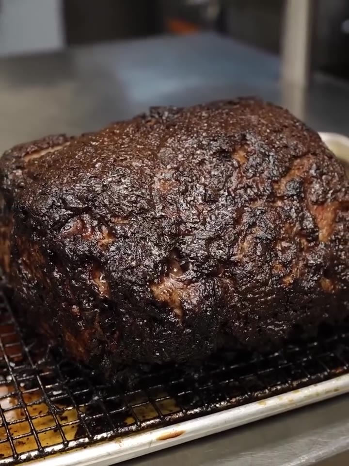

7 días de maduración + 24-36 h de marinado + ~1 h 50 de horno●●●●○
parapersonas

Pasos
Limpiar el costillar retirando suavemente la capa de grasa exterior más dura — sin quitarla toda, porque es la que da el sabor. Guardar todos los recortes y huesos para el au jus.
Madurar en seco: poner la carne sobre una rejilla dentro del refrigerador, sin cubrir, al menos 7 días.
Confitar el ajo lentamente en aceite de semilla de uva a 175 °C durante 25-30 minutos.
Armar el marinado: procesar el ajo asado con su aceite, el tomillo fresco, la Worcestershire, la A1, la mostaza, la miel, la sal kosher, la pimienta negra y una porción generosa de mayonesa hasta integrar.
Frotar todo el costillar con la pasta, con las manos, entrando en todas las cavidades y zonas de los huesos. Refrigerar descubierto entre 24 y 36 horas.
Hornear ~1 hora y 50 minutos, hasta 49-52 °C internos (término medio-rojo).
Reposar 10-12 minutos sobre una tabla antes de cortar, para que los jugos se redistribuyan.
Au jus: asar los recortes y huesos con los vegetales; cocinar a fuego lento con agua, ajo y cebolla en polvo y un chorro de Worcestershire hasta reducir y concentrar.
Servir: cortar en rebanadas gruesas, bañar con el au jus caliente y acompañar con rábano picante fresco recién rallado.